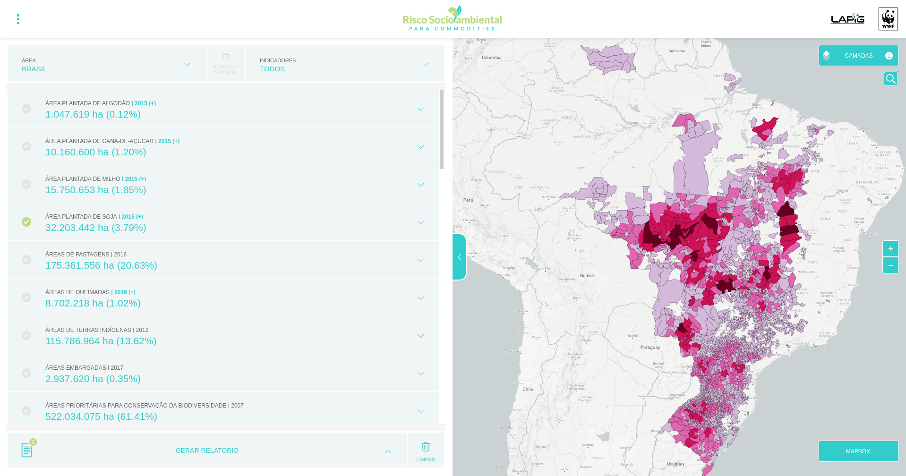
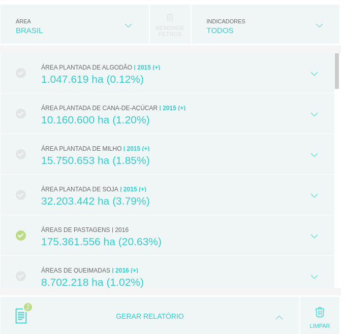
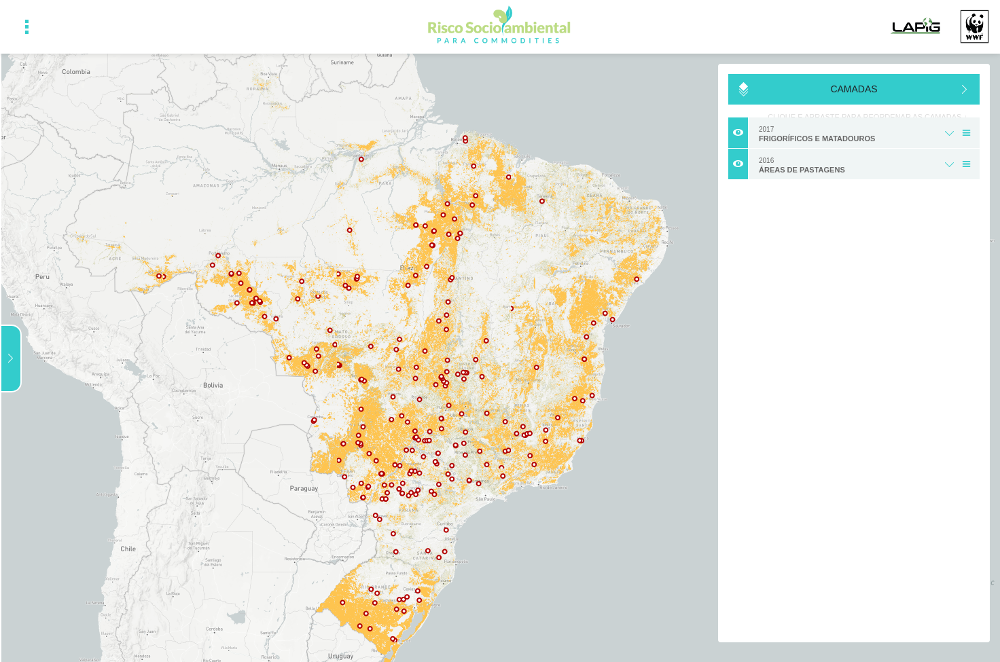
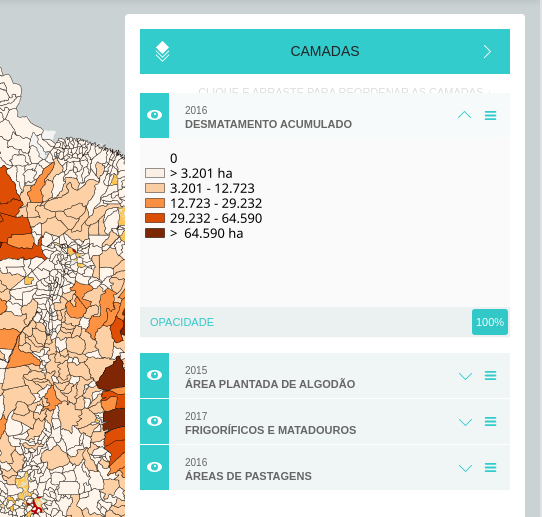
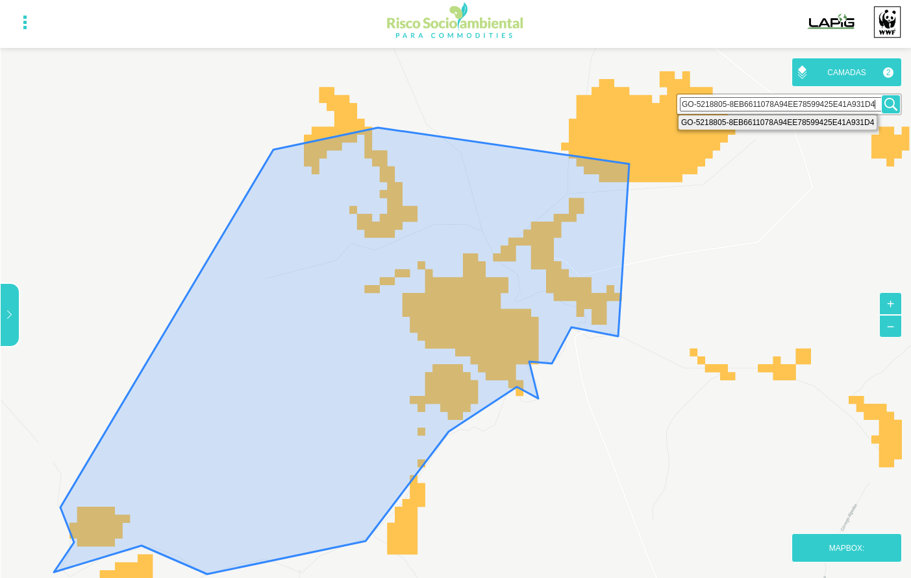
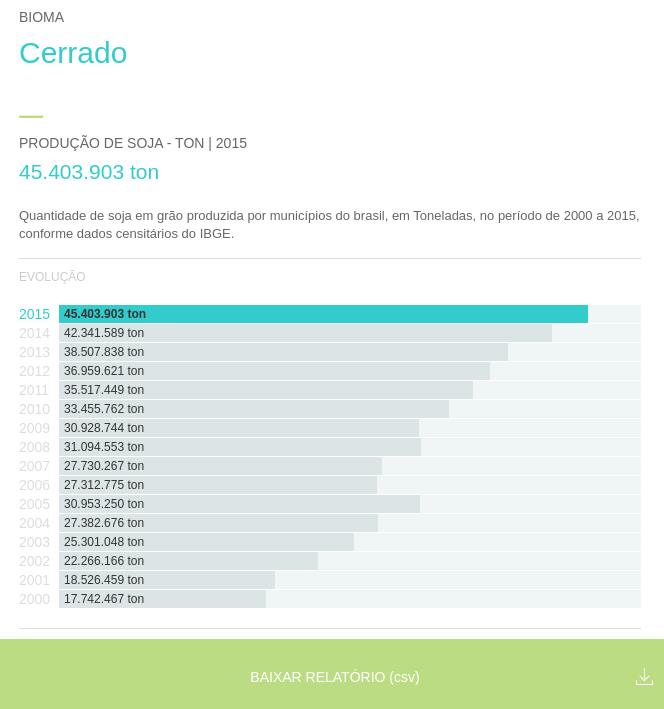
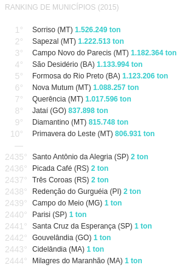
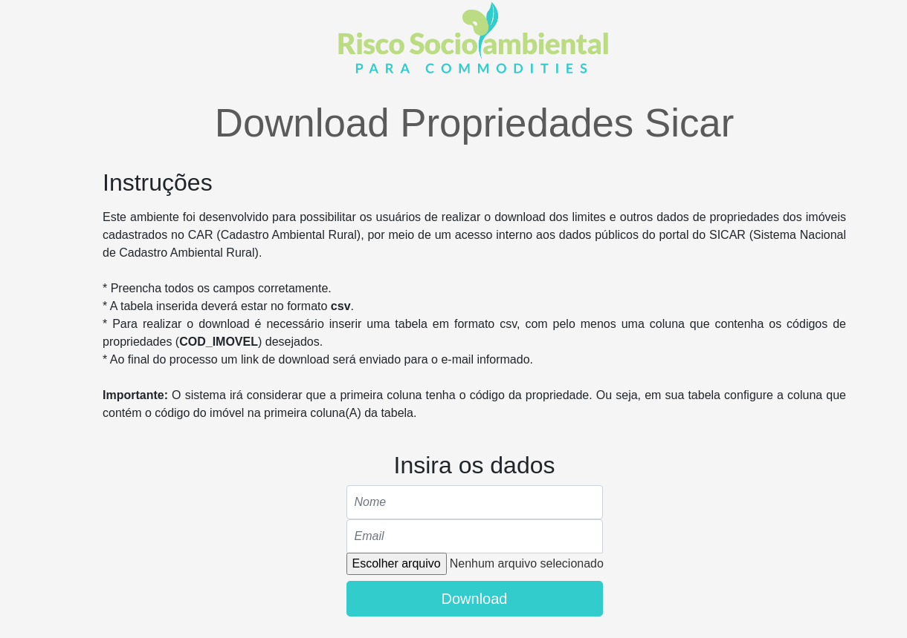
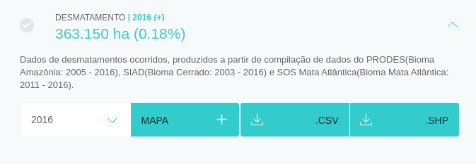

Funcionalidades
A abordagem da plataforma baseia-se em apresentar um vasto conjunto de dados secundários relevantes (fontes oficiais e dados de referência) em um mapa interativo de fácil navegação. Todos os indicadores estão listados com seus respectivos valores na página inicial da plataforma, promovendo assim o acesso mais rápido a informação.
Dashboard
O dashboard da Plataforma Risco Socioambiental é formado por quatro elementos principais:

1 - Indicadores
A unidade de referência são os municípios, mas também é possível fazer análises considerando todo o território nacional, estados, biomas e regiões específicas de interesse (como o Matopiba e Arco do Desmatamento). Os indicadores também podem ser agrupados por categorias (Agricultura, Ambiental, Econômico, Natural, Pecuária e Social). Conforme os filtros de área são aplicados, os valores são atualizados para região selecionada. Também é possível visualizar o percentual do indicador sob a área total da região. Como é ilustrado na imagem logo abaixo, o Brasil possui 175.361.556 hectares de áreas de pastagens, o que equivale a 20,63% de toda área nacional.

2 - Mapa interativo
Área onde todos os indicadores contidos na plataforma podem ser visualizados no mapa para análises e comparações com outros indicadores. Na imagem seguinte temos um exemplo de visualização de indicadores no mapa: indicadores de áreas de pastagens na cor amarela e frigoríficos na cor vermelha.

3 - Controle de Visualização
Permite o controle do nível de zoom do mapa, além de ocultar e ativar a visualização da lista de indicadores, controle das legendas dos dados ativos no mapa. O mapa base (refere ao fundo do mapa fornecendo o contexto geográfico para as camadas adicionais) também pode ser alterado conforme a necessidade de análise do usuário. E por último, o ícone de lupa ferramenta para pesquisa de propriedade por meio do código do Cadastro Ambiental Rural - CAR.
4 - Legenda
As legendas dos dados ativos no mapa contam com um controle de visualização, sobreposição de camadas e também opacidade o que contribui para uma melhor análise do usuário.

Ferramenta de pesquisa por propriedade do CAR
O ícone de lupa é uma ferramenta desenvolvida para pesquisa de propriedade por meio do código do Cadastro Ambiental Rural - CAR. Ao inserir um código de propriedade o limite é evidenciado no mapa e o usuário pode selecionar os indicadores que deseja analisar.

Ferramenta de Gerar Relatório
Um dos recursos mais importantes da plataforma é o "Gerar relatório", que traz em formato de gráfico as séries históricas do(s) dado(s) selecionado(s) para uma determinada região definida pelo usuário. Caso o dado não seja temporal, o valor é mostrado apenas para o ano de criação do indicador, como é o caso do dado de Unidades de Conservação de Proteção Integral (2014), Frigoríficos e Matadouros (2017) e Floresta Plantada(2014).
 Relatório em formato de gráfico da produção de soja em toneladas, mostrando a sua evolução temporal (2000 a 2015) na região do bioma Cerrado.
Destaca-se também a possibilidade de visualizar o ranking dos 10 primeiros e 10 últimos Municípios para o indicador escolhido, levando em consideração o ano e região selecionada. O ranking apresenta a posição, nome do município, Unidade Federativa (UF) e valor do indicador.

Ferramenta de Download de propriedades Sicar
Ferramenta acessível por meio do link.

Ferramenta de Download
Por fim, os usuários podem fazer o download dos indicadores em formato shapefile (SHP) ou CSV, assim como recuperar o relatório em formato CSV.
